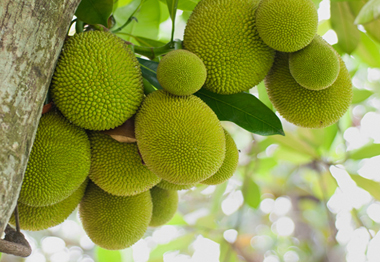

কাঁঠালের পরিচিতি
ফলের মধ্যে সবচেয়ে বড় আকার হলো কাঁঠালের। গ্রীষ্মকালীন ফলগুলোর মধ্যে কাঁঠাল অন্যতম
হিসেবে বিবেচিত। জাতীয় ফল হিসেবে বাংলাদেশ সরকার কর্তৃক স্বীকৃত এই ফলটির সুমিষ্ট
স্বাদ একবারের জন্য হলেও আস্বাদন করেনি, এমন কাউকে বাংলাদেশে খুঁজে পাওয়াই দুষ্কর!
কাঁঠাল একেবারেই আমাদের নিজস্ব ফল। কারণ কাঁঠালের আদি নিবাস এই ভারতীয় উপমহাদেশেই।
বিশেষ করে বাংলাদেশ ও তার আশেপাশের এলাকাগুলো কাঁঠালের উত্পত্তির স্থান হিসেবে
বিবেচিত। ব্রাজিল ও ওয়েস্ট ইন্ডিজের জ্যামাইকায় সীমিত পরিমাণে কাঁঠাল জন্মে।
বাংলাদেশ, আসাম, পশ্চিমবঙ্গ, দক্ষিণ ভারত, বিহার, মায়ানমার, মালয়, শ্রীলংকা ইত্যাদি
এলাকায় যে হারে কাঁঠাল চাষ হয়, এই পরিমাণে বিশ্বের আর কোথাও কাঁঠাল চাষ হয় না।

কাঁঠালের ইংরেজি Jackfruit এবং এর বৈজ্ঞানিক নাম Artocarpus heterophyllus। এটি মাঝারি
আকারের কাষ্ঠল উদ্ভিদ। চারা বপনের ৭-৮ বছর পর থেকেই গাছে ফল আসা শুরু করে। কাঁঠাল বেশ
কয়েক জাতের হয়। তবে সাধারণত গলা বা গালা এবং খাজা - এ দুভাগেই কাঁঠালকে বিভক্ত করা
হয়। গালা কাঁঠালের কোষ নরম, মিষ্টি, রসালো, কোমল ও অপেক্ষাকৃত ছোট আকারের। খাজা
কাঁঠালের কোষ আকারে বড়, কম রসালো ও অপেক্ষাকৃত শক্ত বা কচকচে হয়।
কাঁঠাল এমন একটি ফল, যা কাঁচা এবং পাকা দু অবস্থাতেই খাওয়া যায়। কাঁচা কাঁঠালকে
এঁচোড় বলা হয়। এঁচোড় তরকারি হিসেবে রান্না করে খাওয়া হয়। মাংস দিয়ে রান্না করা
এঁচোড় তরকারি হিসেবে খুবই জনপ্রিয়। পাকা কাঁঠালের কোষ খাওয়া হয়। কাঁঠালের রস দিয়ে
আমসত্ত্বের মতো 'কাঁঠালসত্ত্ব'ও তৈরি করা যায়। পাকা কাঁঠালে রয়েছে পেকটিন, তাই কাঁঠাল
দিয়ে জেলিও তৈরি করা যায়। বর্তমানে কাঁঠাল দিয়ে থাইল্যান্ডে চিপসও তৈরি হচ্ছে! শুধু
ফল নয়, কাঁঠালের বিচিও খাদ্যযোগ্য। কাঁঠালের বিচি শুকিয়ে বাদামের মতো করে ভেজে খাওয়া
যায়। এটা দিয়ে তরকারিও রান্না করে খাওয়া যায়। কাঁঠালের বিচি ভর্তা খাদ্য হিসেবে
খুবই সুস্বাদু।
কাঁঠালের পুষ্টি উপাদান
প্রতি ১০০ গ্রাম কাঁঠালে রয়েছে -কার্বোহাইড্রেট- ২৪ গ্রাম, প্রোটিন- ১ গ্রাম, খাদ্যআঁশ- ২ গ্রাম, ফ্যাট- ০.৩ গ্রাম, ক্যালসিয়াম- ৩৪ মিলিগ্রাম, ম্যাগনেসিয়াম- ৩৭ মিলিগ্রাম, পটাশিয়াম- ৩০৩ মিলিগ্রাম, ম্যাঙ্গানিজ- ০.১৯৭ মিলিগ্রাম, আয়রন- ০.৬ মিলিগ্রাম, ভিটামিন এ- ২৯৭ আইইউ, ভিটামিন সি- ৬.৭ মিলিগ্রাম, থায়ামিন- ০.০৩ মিলিগ্রাম, রিবোফ্লেভিন- ০.১১ মিলিগ্রাম, নিয়াসিন- ০.৪মিলিগ্রাম, ভিটামিন বি৬- ০.১০৮ মিলিগ্রাম।
কাঁঠালের উপকারীতা
কাঁঠালে রয়েছে প্রচুর পরিমাণে ভিটামিন সি, যা দাঁত, মাঢ়ি ও মুখের ঘা জাতীয় রোগ
প্রতিরোধে সহায়তা করে।
এতে চর্বি জাতীয় উপাদানের উপস্থিতি নেই বললেই চলে। তাই কাঁঠাল খেলে ওজন বৃদ্ধির আশংকা
একেবারেই থাকে না।
কাঁঠালে রয়েছে সর্বোচ্চ পরিমাণে পটাশিয়াম, যা উচ্চ রক্তচাপ কমাতে সাহায্য করে এবং
হার্টের বিভিন্ন রোগ প্রতিরোধে সহায়তা করে।
কাঁঠালে রয়েছে প্রচুর পরিমাণে অ্যান্টিঅক্সিডেন্ট যা ক্ষতিকর দূষণ থেকে শরীরকে রক্ষা
করে। স্তন, পাকস্থলী ও ফুসফুসের ক্যানসার প্রতিরোধ করতে সহায়তা করে।
কাঁঠালে রয়েছে খাদ্যআঁশ, যা কোষ্ঠকাঠিন্য দূর করে ও হজমশক্তি বৃদ্ধি করে।
টেনশন ও নার্ভাসনেস কাটাতে কাঁঠাল বেশ উপকারী।
এতে উপস্থিত খনিজ উপাদান রক্তে শর্করা বা চিনির পরিমাণ নিয়ন্ত্রণ করে। ফলে ডায়াবেটিস
নিয়ন্ত্রণেও কাঁঠাল ভূমিকা রাখে।
সর্দি-কাশি প্রতিরোধেও কাঁঠাল বেশ কার্যকরী।
কাঁঠালে রয়েছে প্রচুর পরিমাণে ভিটামিন এ। রাতকানা রোগ প্রতিরোধে কাঁঠালের জুড়ি নেই!
কাঁঠালের ক্যালসিয়াম ও ম্যাগনেসিয়াম হাড় ও দাঁত গঠনে এবং মজবুতকরণে কার্যকরী ভূমিকা
রাখে।
এতে উপস্থিত ভিটামিন বি হৃদরোগের ঝুঁকি কমায় সেই সাথে ত্বকের নানা রোগ প্রতিরোধে
সহায়তা করে। ত্বক মসৃণ ও উজ্জ্বল করতেও কাঁঠালের ভূমিকা রয়েছে।
কাঁঠালে বিদ্যমান প্রোটিন দেহের কোষ গঠনে ইতিবাচক ভূমিকা পালন করে।
কাঁঠালে উপস্থিত আয়রন ও খনিজ উপাদান রক্তস্বল্পতা দূর করে। সুষ্ঠুভাবে রক্ত চলাচলে
সহায়তা করে।
গর্ভবতী মা প্রতিদিন ২০০ গ্রাম পাকা কাঁঠাল খেলে গর্ভস্থ শিশুর সব ধরনের পুষ্টির অভাব
দূর হয় এবং গর্ভস্থ সন্তানের বৃদ্ধি স্বাভাবিক ভাবে হয়। স্তন্যদায়ী মায়ের দুধের
পরিমাণও বৃদ্ধি পায়।
কাঁঠালে উপস্থিত সকল উপাদান রোগ প্রতিরোধ ক্ষমতা বৃদ্ধিতে সহায়তা করে।
কাঁঠালের অন্যান্য ব্যবহার
কাঁঠালের খোসা ও ভুতি গবাদি পশুর খাবার হিসেবে ব্যবহৃত হয়। কাঁঠালের পাতা ছাগলের
অত্যন্ত পছন্দের খাবার।
কাঁঠালগাছের শেকড় চর্মরোগ, হাঁপানি, জ্বর ও ডায়রিয়া রোগের ওষুধ হিসেবে ব্যবহৃত হয়।
কাঁঠালের পোড়া পাতার ছাইয়ের সাথে ভুট্টা ও নারকেলের খোসা একসাথে পুড়িয়ে নারকেল
তেলের সাথে মিশিয়ে ঘা বা ক্ষতস্থানে লাগালে তা দ্রুত শুকিয়ে যায়।
কাঁঠালগাছের কাঠের গুঁড়া কাপড় রাঙানোর রং তৈরির উপাদান হিসেবে ব্যবহৃত হয়।
কাঁঠালগাছের কাঠ অত্যন্ত শক্ত, মজবুত ও উন্ন ধরনের কাঠ। এ কাঠ আসবাবপত্র তৈরির কাজে
ব্যবহার করা হয়।